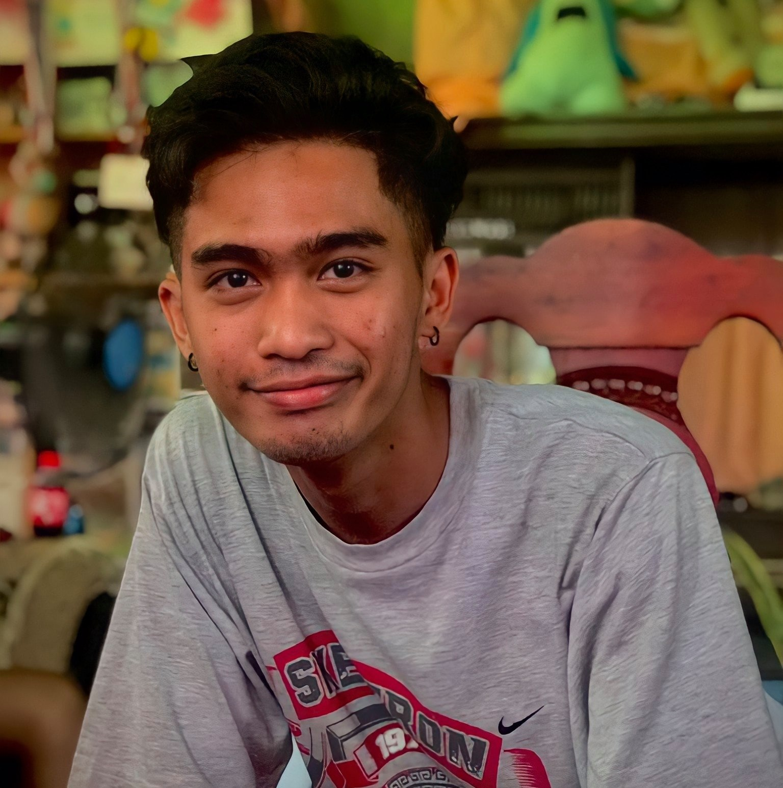

Butz M. Fernando

Summary
I am a college student majoring in metallurgical engineering. Although
coding is not directly related to my course, I am passionate about
learning it, especially in web development. I believe that coding skills
are valuable in any field, and I am excited to see what I can create with
them. I am confident that I can become a successful front-end developer,
and I am committed to achieving my goal.
Education
- Kapatagan National High School
(2013-2019)
-With Honors
-Sports Awardee
- Mindanao State University - Iligan Institute Technology
(Undergraduate)
Work Experience
- I work as a part-time video editor
skills
- Video Editing
-
Flexible - Willing to be trained and I am comfortable working with
others.
- Keen organizational skills - Manage time and deadlines.
© 2023 Butz M. Fernando